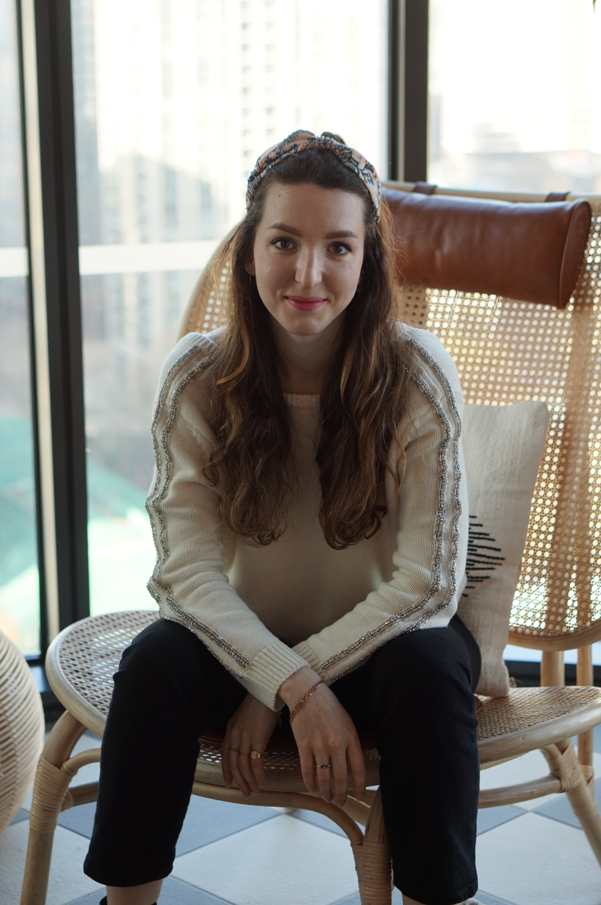

I am currently an Assistant Professor (lecturer) at the Department of Mathematics at Imperial College London and the Imperial-X initiative. I am looking for new PhD students (to start asap). If you are interested please get in touch!
My group works on computational models to understand and improve information processing in artificial and biological intelligent systems through a combination of tools from stochastic processes, statistical mechanics and mathematical modeling. We apply this in i) explainable machine learning, ii) privacy-preserving machine learning and iii) neuroscience.
I often collaborate with companies on applied problems that use machine learning and optimization in finance, smart cities and healthcare. For potential collabs, please do reach out.
Prior to my current position I was an Assistant Professor at the University of Warwick at the Operations Research department and did postdocs at Imperial College London and CWI Amsterdam. I obtained my PhD cum laude from the University of Bologna as part of a Marie-Curie ITN-EID project. My MSc was in Quantitative Finance at the VU Amsterdam and my BSc in Applied Mathematics from the Delft University of Technology.
For our work on last mile logistics using reinforcement learning and optimization with Skialabs, see the website.
Publications on Google Scholar // Research interests and projects // Linkedin // YouTube // GitHub // Email: a.surname@imperial.ac.uk